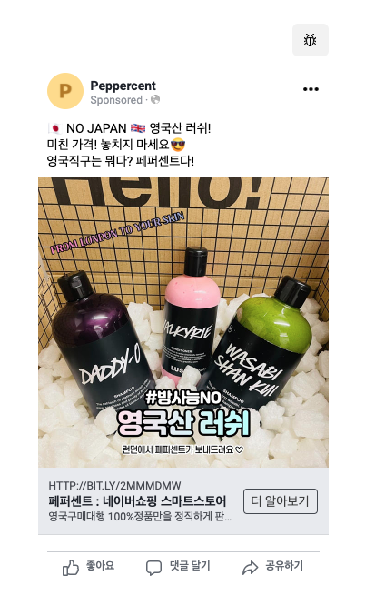
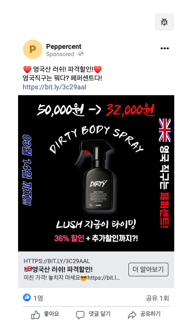

Lush 러쉬 퍼포먼스 광고 최적화 :
6주 주문 베이스라인 분해, 타겟팅 단일화로 Blended ROAS 4,514% & 수수료 0.24% 방어
광범위 타겟팅의 높은 빈도(1.83) 피로 누수 문제를 과거 6주간 주문 영수증 데이터 분해를 통해 진단했습니다. 구매 기여도 88.4%의 여성 18~44세 단일 세그먼트로 집중 격리하고, 단독 킬러 상품 '더티 바디스프레이' 36% 특가 A/B 피벗과 네이버 스마트스토어 오가닉 검색 트리거(Search Trigger)를 규명하여 네이버 수수료 0.24% 수준 방어 및 더티 스프레이 주문 전환 172.4%↑ (2.7배), 총매출 284만 원(Blended ROAS 4,514% / 순증 iROAS 1,914%)을 실현한 실전 그로스 케이스입니다.
6주간 주문 영수증 시계열 분해 : 광고 이전의 평상시 기준점(Baseline)과 1차 광고 실패
성과를 과장하지 않기 위해 광고 집행 이전 4주간의 평상시 오가닉 주문 영수증과 1차 광범위 광고 집행 데이터를 전수 대조하여 정밀한 기준점(Baseline)을 먼저 수립했습니다.
| 기간 (Week) | 집행 광고 / 마케팅 활동 | 전체 주문 (건) | 더티 스프레이 주문 | 광고비 지출 | 비고 / 분석 포인트 |
|---|---|---|---|---|---|
| 1주차 (01.29 ~ 02.04) | 광고 집행 없음 (평상시) | 51건 | 약 18건 | £0.00 | 오가닉 베이스라인 |
| 2주차 (02.05 ~ 02.11) | 광고 집행 없음 (설 연휴 비수기) | 27건 | 약 12건 | £0.00 | 계절적 비수기 |
| 3주차 (02.12 ~ 02.18) | 네이버 파워링크 검색광고 테스트 | 84건 | 약 25건 | 약 4만 원 | 네이버 키워드 광고 효과 확인 |
| 4주차 (02.19 ~ 02.25) | 광고 집행 없음 (평상시) | 59건 | 약 20건 | £0.00 | 평상시 기준점 확립: 주간 약 50건 (더티 20건) |
| 5주차 (02.26 ~ 03.04) | 1차 메타 광범위 광고 (샴푸 3종) | 99건 | 29건 (+9건) | £85.68 (광범위 광고비) | 빈도 1.83 피로 누적, 남성 전환 전무로 예산 누수 |
| 6주차 (03.05 ~ 03.12) | 2차 최적화 광고 (더티 단독 특가) | 172건 (+73.7%) | 79건 (+395%, 약 4배) | £39.81 (-53.5% 절감) | 광고비 -53.5% 절감, 주문 폭증, 빈도 1.20 안정화 |

데이터 분해 : 구매의 88.4%는 여성이었고, 킬러 상품은 오직 '더티'였다
직관을 배제하고 메타 광고 관리자의 성별/연령별 데이터와 실제 스마트스토어 구매 영수증을 교차 검증했습니다.
2. 킬러 단독 상품: 1차 광고에서 샴푸 3종으로 분산되었을 때 주문 전환 증가는 미미한 수준에 그쳤습니다. 한국 2030 세대에게 압도적인 인지도와 재구매율을 가진 단 하나의 킬러 아이템은 '더티 바디스프레이 (Dirty Body Spray)'였습니다.
- 가설 1 (타겟 단일화): 남성 세그먼트를 제외하고 '여성 18~44세' 단일 세그먼트로 집중하면, 광고비 예산을 50% 이상 절감하면서도 빈도를 1.20 수준으로 안정화할 수 있다.
- 가설 2 (킬러 소재 피벗): 샴푸 3종 분산 광고를 중단하고, 한국 공식 매장가(50,000원) 대비 직구 특가(32,000원, 36% 할인)를 직관적으로 비교 제시하는 '더티 단독 킬러 소재'에 예산을 집중하면 구매 전환율을 극대화할 수 있다.
소재 A/B 테스트 피벗 : 카테고리 나열형에서 '단독 킬러 특가'로 전환
타겟을 여성 18~44세로 단일화함과 동시에, 광고 소재를 1:1로 극명하게 대조하여 A/B 테스트를 단행했습니다.


실측 성과 검증 : 네이버 직접 검색 트리거(Search Trigger) 규명 & 수수료 0.24% 영수증 실측
광고비 53.5% 절감과 Blended ROAS 4,514% 달성뿐 아니라, 인스타 광고가 네이버 직접 검색을 유발하여 수수료를 극소화한 인과관계를 실측 데이터로 규명했습니다.


냉철한 비즈니스 회고 : 왜 스케일업을 중단했는가? 그리고 개발로 향한 계기
ROAS 4,514%라는 숫자에 도취되지 않고, 공급망/인력 한계와 크로스셀링 가설 기각을 냉정히 분석하여 캠페인 확장을 중단했습니다. 그리고 이 과정에서 겪은 플랫폼 데이터 사각지대는 직접 풀스택 개발(Case 03)로 뛰어들게 된 결정적 전환점이 되었습니다.
2. 비자체 생산(소싱)의 재고 수급 병목: 자체 제조가 아닌 영국 현지 부티크 구매대행 특성상, 현지 재고 수급 한계로 배송 리드타임이 2주 이상 지연되기 시작했습니다. 가격 경쟁력이 있더라도 2주를 초과하면 배송 지연 리뷰가 증가하여 브랜드 신뢰도가 훼손되므로, 추가 광고비 집행은 비용 대비 실익이 낮아지는 임계점이었습니다.
3. 명품 크로스셀(Cross-selling) 전략 가설의 기각: 본래 전사적 전략은 러쉬를 엔트리 상품으로 삼아 정품 신뢰를 쌓은 뒤 객단가가 높은 고마진 명품 패션(지갑/가방)으로 유도하는 것이었습니다. 그러나 구매 데이터를 정밀 교차 검증한 결과, 러쉬 구매자와 명품 구매자 간의 교차 구매 상관관계가 확인되지 않았습니다. 판매 채널만 같을 뿐 2030 영타겟과 고단가 명품 소비층은 완전히 분리되어 있었고, 구매대행 비즈니스의 구조적 한계를 인정하고 추가 확장을 멈추었습니다.